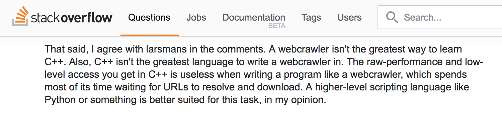
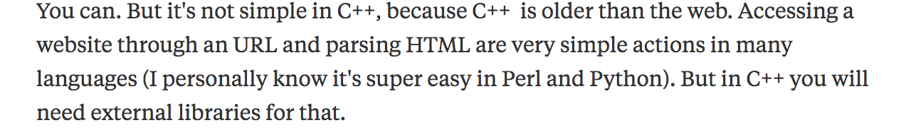
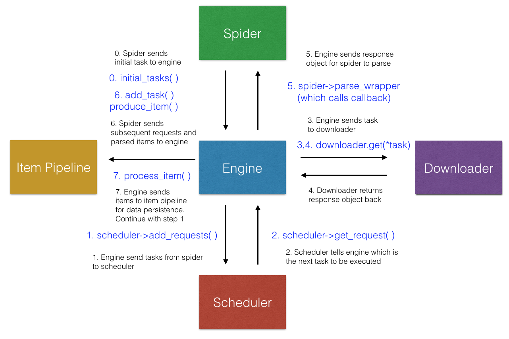

class: center, middle, inverse # CRawlerPlusPlus: A modern C++ web crawler, and more ### by [@Yanlin](https://github.com/alan97), [@Yimin](https://github.com/elega) & [@Hongning](https://github.com/huanyan-hny) --- # Why crawler? The coming week is the reading week. -- You are busy at Bulter ~~watching Columbia Buy Sell Memes~~ preparing for exams. <a href="url"></a> -- You feel hungry, but you are too lazy to go grab food. -- What to do? -- Order Seamless! --- # Why crawler? But you are even too lazy to look at Seamless. You'd rather just pick a restaurant and order all of its most popular food under $15 bucks. -- What to do now? -- Write a .red[*crawler*] to scrape everything down from Seamless for you! -- Wait... what is a crawler? And wouldn't that be more work? -- Not at all! -- .big[Goal in 30 minutes: everyone can write a simple crawler with CRawlerPlusPlus] --- class: center, middle, inverse # HTTP in 2 minutes --- template: default layout: true ### HTTP in 2 minutes --- # The language that client and server talks in The Hypertext Transfer Protocol (HTTP) has two main components: request and response. -- Let's read a HTTP **request**: ```HTTP GET /Bjarne.jpg HTTP/1.1 Host: www.stroustrup.com Connection: keep-alive User-Agent: Chrome/57.0.2987.133 Accept: text/html,application/xhtml+xml,application/xml;q=0.9,image/webp,*/*;q=0.8 Accept-Language: en-US,en; ``` -- It says: - I want to .red[GET] a file called .red[/Bjarne.jpg] from the host .red[www.stroustrup.com]. - I want to keep the connection between us .red[alive]. - I am a .red[Chrome] browser. - I accept the following response, including picture (.red[image/webp]). - I accept English as the language. --- # The language that client and server talks in And here's the **response** from the server: ```HTTP HTTP/1.1 200 Okay Date: Fri, 28 Apr 2017 05:51:09 GMT Server: Apache Connection: Keep-Alive Keep-Alive: timeout=5, max=100 Set-Cookie: sessionid=38afes7a8; httponly; Path=/ ``` -- It says: - I received your request and the .red[status] now is Okay. - I documented the .red[timestamp] our connection happens. - I am an .red[Apache] server. - I will keep our connection .red[alive], but after .red[5] seconds if the connection is idle I will close it. - In each persistent connection, you can make a maximum of .red[100] requests. - And here's a piece of .red[cookie] information. Put that in your cookie jar and let me know your .red[sessionid] next time when we talk. Easy? Good! --- # How is this related to web crawler Definition : "_A Web crawler, sometimes called a spider, is an Internet bot that systematically browses the World Wide Web, typically for the purpose of Web indexing (web spidering)._" (Wikipedia) -- In short, a web crawler will go to designated websites and make .red[requests] on behalf of you. -- It will then .red[parse the response] according to your requirement. -- And .red[iterate, iterate, iterate]. --- class: center, middle, inverse layout: false # Motivation -- Why are we building a web crawler using C++ --- template: default layout: true ### Motivation --- # Many people told us not to do that... - A list of "Dozens of awesome C++ libraries": .red[not even one of them] is a crawler library (https://github.com/fffaraz/awesome-cpp) - Google search for "C++ crawler", it's either code snippets from ancient (7 yrs old or above), or something like below: -- <a href="url"></a> Source: http://stackoverflow.com/questions/4278024/a-very-simple-c-web-crawler-spider <a href="url"></a> Source: https://www.quora.com/How-do-I-make-a-simple-web-crawler-using-C++ --- # But we view this as an opportunity - C++ has changed: Modern C++ is more expressive than ever. - Async IO has become more mature -- and C++ has great control at system-level. - C++ is fast. Much faster than python. - C++ is strongly typed, so it catches errors earlier -- You don't want to waste all day (and network resources) downloading garbage before realizing it. --- # Purpose of this library: - To address the need of a crawler library in C++ - To showcase that Modern C++ is not as bad as people thought in handling network / string parsing / crawler job --- layout: false class: center, middle, inverse # Architecture --- template: default layout: true ### Architecture --- # Key terms - Engine - The multithreaded **brain** that connects all the components and manages them. - Scheduler - Schedule the task, manage depth, duplication, etc. - Item & Item Pipeline - Item is the (well-structured) data to be stored - It can be image, json, txt, key-value pairs... anything - Item pipeline handles data persistence - Task & Downloader - A task unit contains all enough information for downloader to perform the task - e.g.: request_method, session_name, authentication info - Spider - Do the parsing of the HTTP response (either HTML or JSON) - Get items to be stored - Get future tasks to be performed - Powered by in-house parsing library (very handy!) --- <a href="url"></a> --- layout: false class: center, middle, inverse # Technical Highlight --- template: default layout: true ### Technical Highlight --- ## Truly optional constructor - Solution 0: Traditional Approach ```cpp Task::Task(string _url, spider_callback _callback, Request_method _method, Request_content _content , Session_type _session_type, string _session_name , Auth_type _auth_type , Authentication _auth, Form _form , Header _header); auto T = Task("http://google.com", nullptr, Request_method::GET, Request_content::HTML, Session_type::AUTO, "", Auth_type::None, Authentication("",""), Form {}, Header {}); // Long and tedious ... many things are the same in most of the time! ``` --- ## Truly optional constructor - Solution 1: Default Value ```cpp auto T = Task("http://google.com", nullptr); // Yeah everything else is optional now! // What if I want to specify the session name? auto T2 = Task("http://google.com", nullptr, Request_method::GET, Request_content::HTML, Session_type::NEW, "new_session"); /* Shoot -- I just want to specify the session name, * but will have to write all the previous default value explicitly! */ ``` --- ## Truly optional constructor - Solution 2: Constructor with default value + set_x methods ```cpp Task::Task(string _url, spider_callback _callback, Request_method _method, Request_content _content , Session_type _session_type, string _session_name , Auth_type _auth_type , Authentication _auth, Form _form , Header _header); auto T2 = Task("http://google.com", nullptr); T2.set_session_type(Session_type::LAST); auto T3 = Task("http://google.com", nullptr, Request_content::FILE, Request_method::POST, Session_type::LAST); // error /* error -- but why does it even matter?? * The library should be smart enough to understand what's going on! */ ``` --- ## Truly optional constructor - Our approach ```cpp template <typename... Tail> Task(string _url, spider_callback _callback, Tail... tail): url(_url), callback(_callback) { method = Request_method::GET; content = Request_content::HTML; session_type = Session_type::DEFAULT; session_name = ""; auth = Authentication("",""); form = {}; Crawler_Util::set_option(*this, tail...); } #define FWD(...) ::std::forward<decltype(__VA_ARGS__)>(__VA_ARGS__) template <typename C> void set_option(C& c) { // base case } template <typename C, typename T, typename... Ts> void set_option(C& c, T&& t, Ts&&... ts) { set_option(c, FWD(t)); set_option(c, FWD(ts)...); } template <typename C, typename T> void set_option(C& c, T&& t) { c.set_option(FWD(t)); } auto T3 = Task("http://google.com", nullptr, Request_content::FILE, Request_method::POST, Session_type::LAST); // Now it works! ``` --- ## Truly optional constructor - Pros and Cons Pros: - User does not need to call set_option explicitly - the ordering does not matter anymore! - forwarding will handle both l-value and r-value Cons: - For library implementer it’s a bit more work - Different options must be of different type (otherwise, how does util function know which set_option to call, if there’s many matches?) --- ## Callback Implementation -- Motivation When we get some HTTP requests to parse, they may came from different sources as well as have different type. -- The user may design multiple handler to deal with different kinds of HTTP responses. -- Therefore, we don’t want to associate the handler with some specific functions, but rather, we want each task to "know" which function to be called once it is done. -- Essentially, we want a callback mechanism! --- ## Callback Implementation -- typedef and issue The callback mechanism is implemented by the std::function. We defined our callback as: ```cpp typedef function<void(shared_ptr<Task>, shared_ptr<Response>, function<void(Task&)>, function<void(Item&)>)> spider_callback; ``` The callback function need to be defined in the class which derives from the Spider class. It must have the same parameters like the example showed above. -- The address of a callback function could be retrieved by &ClassName::Callback. -- .red[Issue with this]: However, the function pointer of the callback couldn’t be converted to the spider_callback because as the member function pointer inside a class, it could only be converted to the std::function, which must contain a parameter with type ClassName& or ClassName*. Whenever the std::function is invoked, an instance of the class has to be passed in. --- ## Callback Implementation -- Solution In order to make that function address conform to our spider_callback, we need a helper function: ```cpp template<class T> spider_callback callback(void (T::* callback) (shared_ptr<Task>,shared_ptr<Response>,function<void(Task&)>,function<void(Item&)>)) { return std::bind(callback, (T*)this, std::placeholders::_1, std::placeholders::_2, std::placeholders::_3, std::placeholders::_4); } ``` Now we can define callback handler as below: ```cpp void parse(shared_ptr<Task> task, shared_ptr<Response> res, function<void(Task&)> add_task, function<void(Item&)> produce_item) ``` and then associate the function with the new task. ```cpp Task("www.google.com",callback(&IMDBSpider::parse)) ``` --- # Yield-like behaviour -- Problem definition In the handler, we suppose user to produce new tasks and new items. -- At first, we require the user to return a vector, which includes all of the data we are going to pass back to the engine, but it tends to be unfriendly to the user: ```cpp // This code needed in every add task parser! { vector<shared_ptr<Task>> ret; ret.push_back(make_shared<Task>(Task("www.google.com",callback(&IMDBSpider::parse))); return ret; } ``` --- # Yield-like behaviour -- Solution In the Spider class, we wrapped the user’s functions, passed two callback functions to user, which are implemented in the lambda function. -- Basically, it pushes the item user returned into the pre-defined vector. Every time the user calls the callback, one item will be pushed into the vector. After the user handled all of the objects, the helper function returned the vector back to the engine: Inspired by the Python yield return mechanism, we gave the user callback function to achieve yield-like behavior: ```cpp // Defined in Spider base case; Engine calls this vector<shared_ptr<Task>> Spider::initial_tasks_wrapper() { vector<shared_ptr<Task>> ret; initial_tasks([&](Task& req){ ret.push_back(make_shared<Task>(req)); } ); return ret; } // In user-defined spider, do the following will be enough! add_task(Task("www.google.com",callback(&IMDBSpider::parse)); ``` --- # More on scope (1/3) Functions can access everything from their outer scope. var a = 1; function doSomething () { a; // 1 function doMore () { a; // 1 } } --- # More on scope (2/3) Not the other way around. function doSomething () { var b = 1; function doMore () { b; // 1 } } doSomething(); b; // ReferenceError ??? Funksjon kan kjøres når expression - vanlig med () rundt for å gjøre til expr. --- task: [#03 JavaScript pwns your scope](http://js-workshop.herokuapp.com/#2/3) # More on scope (3/3) Forgot the __`var`__? You've got yourself a global! function doSomething () { c = 1; function doMore () { c; // 1 } } doSomething(); c; // 1 --- task: [#04 Variables by reference](http://js-workshop.herokuapp.com/#2/4)<br /> [#05 Binding scope](http://js-workshop.herokuapp.com/#2/5) # Closures (1/3) Functions can bind scope, even after their outer function has returned! var counter = function () { var i = 0; return function () { return i++; }; }; var inc = counter(); inc(); // 0 inc(); // 1 --- task: [#06 Globally ugly, privately slow, closingly sweet](http://js-workshop.herokuapp.com/#2/6)<br />[#07 Variables by reference](http://js-workshop.herokuapp.com/#2/7) # Closures (2/3) Functions can run immediatly! var inc = function () { var i = 0; return function () { return i++; }; }(); // Note the trailing ()! inc(); // 0 inc(); // 1 --- # Closures (3/3) Create modules with private state! var lib = {}; lib.module = (function () { var privateVariable; var privateFunction = function () {}; return { publicProperty: 1, privilegedMethod: function (arg) { // privateVariable = arg; } }; })(); --- # Context - Functions run in different contexts - Depending on how they are invoked - May be invoked in 4 primary ways - Function invocation - Constructor invocation - Method invocation - `apply`/`call` invocation --- task: [#08 What is this?](http://js-workshop.herokuapp.com/#2/8) # Function invocation Functions called directly. var countArgs = function () { // this === window return arguments.length; }; countArgs(); // 0 ??? I nodejs ville this ikke være window, men exports. --- task: [#09 Constructing objects](http://js-workshop.herokuapp.com/#2/9) # Constructor invocation (1/2) Functions called with the __`new`__ keyword. function Person (name) { // this === instance of Person this.name = name; } var bob = new Person('bob'); var ed = new Person('ed'); ed.name = 'fred'; --- # Constructor invocation (2/2) But there's a gotcha! function Person (name) { this.name = name; } var bob = Person('bob'); var ed = new Person('ed'); window.name === 'bob' // true WTF? --- task: [#10 Context confusion](http://js-workshop.herokuapp.com/#2/10) # Method invocation Functions called on objects. var obj = { value: 1, getValue: function () { // this === obj return this.value; } }; obj.getValue() // 1 --- task: [#11 Is this yours?](http://js-workshop.herokuapp.com/#2/11) # apply/call invocation Applying functions to objects. function doStuff () { return this.speed; } var obj = { speed: 2 }; doStuff.apply(obj, [ arg1, arg2 ]); // 2 doStuff.call(obj, arg1, arg2); // 2 --- layout: false class: center, middle, inverse # Inheritance --- layout: true template: default ### Inheritance --- # Multiple paradigms - Pseudoclassical inheritance - Prototypal/differential inheritance - Functional inheritance ??? - Ullent område - Mange gjør forskjellig - Prøver å etterligne andre språk - JavaScript kan tilpasses flere paradigmer --- # Prototype (1/3) - Inherit directly from other objects - Properties - Methods - All objects inherit from a `prototype` property - Bound upon object creation var obj = {}; obj.toString(); // '[object Object]' --- # Prototype (2/3) The `prototype` property. function Object () {} Object.prototype = { toString: function () { return '[object Object]'; } }; var obj = new Object(); obj.toString(); // '[object Object]' --- # Prototype (3/3) var first = new Object(); // first.__proto__ = Object.prototype; first.x = 1; // on first first.toString(); // on first's prototype (Object)  --- task: [#01 Pseudoclassical 1](http://js-workshop.herokuapp.com/#3/1) # Pseudoclassical inheritance (1/2) .right.pushdown[] function CoolObject (x) { this.x = x; } CoolObject.prototype = { getX : function () { return this.x; } }; var coolObj = new CoolObject(1); ??? - Prototype-objektet deles av alle instanser, hvert objekt arver ikke alt - Minner om statiske klassevariabler/metoder - Kan endre ting på prototypen i etterkant - vil påvirke alle instanser - Kan endre prototype for objekt etter opprettelse - Husk at = { .. tilsvarere new Object() --- task: [#02 Pseudoclassical 2](http://js-workshop.herokuapp.com/#3/2) # Pseudoclassical inheritance (2/2) - Intented to look object oriented - looks quite alien? - Remember to use __`new`__! - Clobbering global variables - No compile warning, no runtime warning - Convention - all constructor functions start with an capital letter "_Comfort to unexperienced JavaScript programmers_" "_Induce unnecessary complex hierarcies_" "_... motivated by constraints of static type checking_" __JavaScript has more and better options__ ??? - Bedre å pakke inn new for å unngå å etterligne andre språk - Veldig likt obj := Object clone i Io --- task: [#03 Prototypal](http://js-workshop.herokuapp.com/#3/3) # Prototypal/differential inheritance - Dispence with classes, make useful objects - Specify differences function create (proto) { function F () {}; F.prototype = proto; return new F(); } var eventBase = { emit: function () {}, on: function () {} }; var obj = create(eventBase); obj.emit('some event'); --- task: [#04 Functional](http://js-workshop.herokuapp.com/#3/4) # Functional inheritance (1/2) var person = function (options) { var that = {}; that.getName = function () { return options.name; }; return that; }; var bob = person({ name: 'bob' }); var ed = person({ name: 'ed' }); ??? Ulempe at alle instanser får egne kopier av funksjoner --- # Functional inheritance (2/2) function Car (options) { this.getColor = function () { return options.color; }; } Car.proto... var car = new Car({ color: 'red' }); car.getColor(); // 'red' --- layout: false class: center, middle, inverse # Bad Parts --- layout: true template: default ### Bad Parts --- # Arrays Indices are free to go. var arr = [1, 2, 3]; arr[999] = 0; // WTF arr.length; // 1000 delete arr[1]; arr; // [1, undefined, 3]; ??? Sletting må gjøres med splice(1,1) (fjern ett element fra posisjon 1) --- # for (... in ...) Properties from the `prototype` chain are looped as well. var key; for (key in obj) { if (obj.hasOwnProperty(key)) { // Property belongs to obj itself } } --- # eval is evil Property look-ups. // Don't do eval('var value = obj.' + key); // Rather do var value = obj[key]; Function references. // Don't do var f = new Function("alert('hello');"); setTimeout("alert('hello')", 1000); setInterval("alert('hello')", 1000); // Rather do var f = function () { alert('hello'); }; setTimeout(f, 1000); --- # Falsy values - __`false`__ - __`null`__ - __`undefined`__ - `0` (zero) - `''` or `""` (empty string) - __`NaN`__ (not-a-number, e.g. 'a' / 2) `&&` and `||` return the actual value of the expession that stops the evaluation: function Car (name) { this.name = name || 'default name'; } --- # Transitivity - come again? 0 == '0' // true 0 == '' // true '' == '0' // false false == 'false' // false false == '0' // true undefined == false // false undefined == true // false false == null // false null == undefined // true ' \t\r\n ' == 0 // true --- # Semicolon insertion (1/2) function getStatus () { return { status: true } } --- # Semicolon insertion (2/2) function getStatus () { return; <- semicolon insertion { <- open block status: true <- loop label } <- close block } # W T F --- # arguments is not an array It only pretends to be. { '0': 1, '1': 2, length: 2 } But you can fix it. function f () { var slice = Array.prototype.slice; // [].slice return slice.apply(arguments); } f(1, 2); // [1, 2] --- # Keywords obj[<keyword>] = 1 // Reserved word (undefined, NaN, Infinity?) - `abstract` - __`boolean`__ __`break`__ `byte` - __`case`__ __`catch`__ `char` `class` `const` __`continue`__ - __`debugger`__ __`default`__ __`delete`__ `do` `double` - __`else`__ `enum` `export` `extends` - __`false`__ `final` __`finally`__ `float` __`for`__ __`function`__ - `goto` - __`if`__ `implements` `import` __`in`__ __`instanceof`__ `int` `interface` - `long` - `native` __`new`__ __`null`__ - `package` `private` `protected` `public` - __`return`__ - `short` `static` `super` __`switch`__ `synchronized` - __`this`__ __`throw`__ `throws` `transient` __`true`__ __`try`__ __`typeof`__ - __`var`__ `volatile` __`void`__ - __`while`__ __`with`__ --- # Avoid void Void is not useful, avoid void! - __`void`__ is an operator - takes an operand - returns __`undefined`__ ` ` void 1 // undefined --- layout: false class: center, middle, inverse # That's all folks! Slideshow created with [remark](http://gnab.github.com/remark).